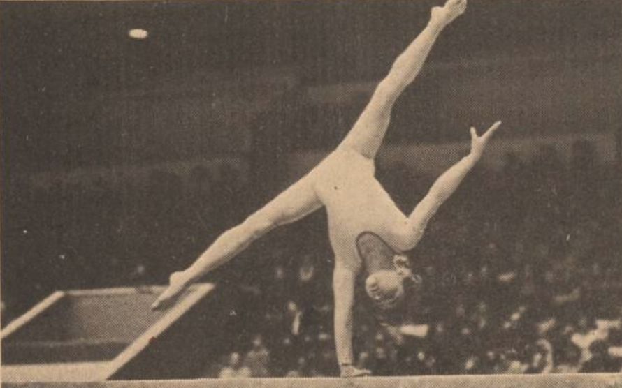

Alla Misnik (USSR)
1981 European AA Bronze
Medalist

Medal Total
European Championships: 2 Silver, 1 Bronze
Alla was born on August 27, 1967
in Kharkov and had a twin brother. She began gymnastics in kindergarten, learning the basics with coach Svetlana Shumovskaya at the Labor Reserves club. Later, Valentin Shumovsky took over. Alla's gymnastics idols were Ludmila
Turischeva and Olga Korbut. She died on July 11, 2006, after suffering a
stroke.
Competition Results
- 1979
Jr. USSR Cup (Candidate for Master): 3rd AA, 2nd
UB, 2nd B
- 1980
- Ion Soltis Memorial: 1st AA (Candidate for Master)
Italy International: 3rd AA
Jr. USSR Championships: 2nd Team, 3rd AA, 1st UB, 3rd FX
-
- 1981
- All-Union Spartakiad for Vocational-Technical Education Students: 1st Team, 1st AA, 1st UB, 1st B
- European Championships: 3rd AA, 2nd UB, 2nd FX,
5th B, 8th V
- Labor Reserves Championship: 1st AA
- Milan Grand Prix: 4th AA
- Moscow News: 1st AA, 1st UB, 1st FX, 3rd B
Schoolchildren's Spartakiade: 2nd Team, 4th UB
- USSR Cup: 1st AA, 1st UB, 1st B, 3rd FX
-
- 1982
- USA-USSR Dual Meet: 1st Team, 8th AA
USSR Championships: 13th (prelims)
USSR Cup: 10th AA
-
- 1983
- Labor Reserves Championships: 2nd AA
Riga International: 2nd AA, 1st FX, 5th UB
Ukrainian Spartakiade: 1st AA
- USA-USSR Dual Meet: 1st Team, 3rd AA
USSR Cup: 3rd Team, 10th AA
USSR Spartakiade: 1st AA, 2nd UB, 2nd B, 3rd FX
This page was last updated on August 30, 2026.
© Gymn Forum